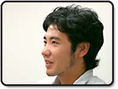
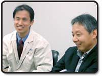
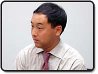
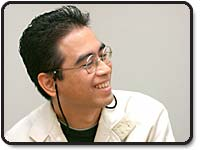

| N.O.M：やはり今回もっとも注目を集めるのは２画面とタッチパネルですよね。 |
| 岡田： タッチパネルというものをゲーム機で採用するのは初めてなので、信頼性の高いものを作らなければいけません。パネルはメーカーさんに強度の高いものをお願いして作っていただきました。最初はゲームでの使用に耐えるか心配しましたが、メーカーさんと協力して改良を加え、かなり強度を上げることに成功しました。ゲームで遊んでいると、どうしても力が入ってしまうので、ふつうのタッチパネルだとどうしても弱かったんですよね。 |
|
| N.O.M：そして目を引くのはデザイン性の高さだと思いますが。 |
丸山： 初めは２画面というものがひとつの機体に収まらないのでは、と思っていました。２画面という設定が採用されてからチームに入ったのですが、発案したものがほとんど削られることなく盛り込まれたので、嬉しかったです。商品的にはけっこうボリュームがあるんですけど、それを感じさせないようなデザインに仕上げることが出来たと思います。
岡田： ゲームボーイアドバンスSPはかなりコンパクトですが、そのつぎに２画面のゲーム機が出てくると、やはり大きく見えてしまうわけですよね。だからできる限りスタイリッシュにしないといけませんでした。
丸山： これは商品としてかなり魅力があるものだと思いますから、その魅力をデザインが邪魔しないようにということを念頭においてデザインしました。カラーリングに関しては、外でも持ち歩けるようにファッション性を考えつつ、重さ・ボリュームを感じさせないようにという意味で輝きを抑えたシルバーと黒のツートンカラーにしました。 |
|
| N.O.M：ワイヤレス通信機能について教えてください。 |
岡田： 数年前からワイヤレスには着手し研究していました。その第一弾として『ポケットモンスター ファイアレッド・リーフグリーン』でワイヤレスアダプタを発売しましたが、それを見てやはりこれはいけそうだと感じまして、さらに発展させてやろうと思いました。ケーブルがあると、持ち歩かなくてはならないし、邪魔に思う人もいるだろうと。さらにアダプタをつけるよりは、もう本体に入っているほうが使いやすいですよね。将来的には、インターネットと接続することもできるように考えて作ってありますし、今後の展開が楽しみですね。
|
| N.O.M：マイク入力についてはどうでしょうか。 |
 岡田： マイク機能を入れるのって、コスト的にはけっこう安いんですよ(笑)。ついてたらおもしろいよねということで入れたんですが、携帯ゲーム機では新しい試みですよね。マイクの信号はアナログなんですが、それをデジタル信号に変えて認識できるようにしてあります。 岡田： マイク機能を入れるのって、コスト的にはけっこう安いんですよ(笑)。ついてたらおもしろいよねということで入れたんですが、携帯ゲーム機では新しい試みですよね。マイクの信号はアナログなんですが、それをデジタル信号に変えて認識できるようにしてあります。 |
| N.O.M：：新発想の機能もたくさんあり、さらに試行錯誤で仕様が変更されているんですね。 |
岡田： そうですね。初期構想でのサウンドはモノラルだったんですが、ソフト開発チームから「ステレオにしてほしい」と要望がありまして、サラウンド効果も楽しめる高性能なステレオにしました。ゲームボーイアドバンスで遊ぶユーザーさんの中には、音を消して遊んでいる人も多いらしいんですよ。でもステレオにして音声を美しくすれば、きっとサウンドも楽しんでくれる人が増えるんじゃないかと思います。ゲームボーイアドバンス用ソフトもDSで遊ぶとステレオサウンドが楽しめますよ。
梅津： 私はスリープ機能をぜひ見てほしいです。スリープモードにすると電源のランプが点滅するので、「スリープ中」というのがわかるようにしてあります。ゲームボーイアドバンスでは電源ランプがそのまま変わらないので、どうなっているのかわからなかったんですが、これには絶対入れてくれと頼んでこの仕様にしてもらいました(笑)。例えばスーパーマリオ64DSでセーブポイントまで電源を切りたくないときでも、DSを畳むだけでポーズ状態のまま長時間そのままにしておけますから、とても便利ですよ。
それとACアダプタですが、ゲームボーイアドバンスSPのものに較べて小さくなっています。コンセント周りがすっきりしますし、コードが細くなって旅行なんかにも携帯しやすくなっています。 |
| N.O.M：ピクトチャットについて、お話を伺いたいのですが。 |
岡田： せっかく標準でワイヤレス通信機能がついているので、通信対応ソフトがなくても使えるようにというソフト開発部門からの要望で組み込むことになりました。ただ、最初考えていたメモリの容量よりも多くなったので、そのへんの兼ね合いがいろいろありました。ハードを作る側と、ソフト側との思惑のやりとりが(笑)。
|
| N.O.M：付属のタッチペンは、よく滑るような気がするのですが…。 |
岡田： よく滑るような素材で作ってあります(笑)。ゲームを遊ぶときはどうしても力が入りすぎますから、できるだけタッチパネルに傷がつきにくい材質で作ったんですね。やはり市場に出回っているPDA用とはちょっと違うものになっています。
喜友名： もしタッチペンをなくしても、先の尖ったものなどで代用しないようにしてくださいね(笑)。綿棒とか良いですよ。
|
|
| N.O.M：新しいものを作るにあたって、どのような部分で苦心されましたか？ |
藤本： とりあえず試作品を作るというところまではいいのですが、やはりそれを評価するにつれて色々と問題点が浮き彫りになります。例えば補強のために外装部品を変更したりすると今度は基板に制限が出てきて部品の配置を変更しなければならなかったり。そのような評価結果による変更のほかに外装デザインを変更したり、スピーカーを２つにするなどの仕様の変更など、あらゆる変更を短い期間でやらねばならなかったので、そこは本当にたいへんでした。
梅津： ゲームアプリケーションを動かすための基本ソフトを作っていたのですが、仕様が変わるとそれに伴う変更がかなりハードで、スタッフはたいへんそうでした。量産するにはコストダウンがかなり重要なので、開発の初期の段階から、生産部門と打ち合わせをしょっちゅうやるんですよ。でも、ソフトウェアの人から「これを入れてくれ」というような要望が入って、打ち合わせのたびにコストが上がっていくということになったり(笑)。今回はコストダウンよりも、機能アップをかなり重視しています。 |
| 喜友名： ディスプレイはゲームボーイアドバンスSPのときのフロントライトからバックライトに変わりました。ゲームボーイアドバンスSPにはライトがついて、それがすごく好評でしたよね。明るくなって見やすいというだけで、かなり受け入れられました。だから今回は明るさをアップすることはもちろん、ほかの箇所でもさらに性能を上げなくてはいけなかったんです。当時はまだ技術が発展途上で、イメージした色が出せなかったこともありましたが、今回はゲームボーイアドバンスSPよりもさらに見やすくなっています。 |
|
| N.O.M：では、発売を心待ちにしているユーザーの方へのメッセージをお願いします。 |
丸山： DSがみなさんのあいだでどう評価されるのか、いまから発売が楽しみです。皆さん、よかったらぜひ手に取ってみてくださいね。
喜友名： 私は常に「多くの人に使っていただけるように」と思いながら開発をしています。それと同時に、「一日ゲームばっかり」という状況を望んではいません。ゲームは"退屈な時間を楽しいひとときに変える道具"であってほしいと思っていますから、どうぞ上手に使ってください。
藤本： 色々な遊びを提供できる、素晴らしいゲーム機に仕上がったと思います。是非、一度体験してみてくださいね。
梅津： このハードの新しい機能を使った、これまでにないアイデアのゲームがたくさん出てくることを、みなさん同様に私も期待しています。今後がとても楽しみです。
岡田： ニンテンドーDSは２画面、タッチスクリーン、ワイヤレス通信、マイク入力など、とにかく新しい機能が満載です。これらの機能を使った面白く新しいゲームソフトに期待してください。 |
|
| N.O.M：今日はどうもありがとうございました！ |